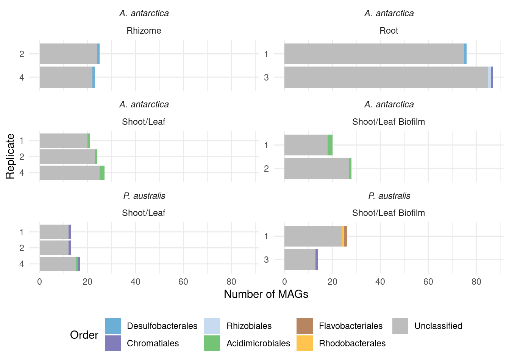

Visualising metagenome differences
Philipp Bayer
20th Nov 2023
Last updated: 2023-11-20
Checks: 6 1
Knit directory:
Amphibolis_Posidonia_Comparison/
This reproducible R Markdown analysis was created with workflowr (version 1.7.1). The Checks tab describes the reproducibility checks that were applied when the results were created. The Past versions tab lists the development history.
The R Markdown file has unstaged changes. To know which version of
the R Markdown file created these results, you’ll want to first commit
it to the Git repo. If you’re still working on the analysis, you can
ignore this warning. When you’re finished, you can run
wflow_publish to commit the R Markdown file and build the
HTML.
Great job! The global environment was empty. Objects defined in the global environment can affect the analysis in your R Markdown file in unknown ways. For reproduciblity it’s best to always run the code in an empty environment.
The command set.seed(20210414) was run prior to running
the code in the R Markdown file. Setting a seed ensures that any results
that rely on randomness, e.g. subsampling or permutations, are
reproducible.
Great job! Recording the operating system, R version, and package versions is critical for reproducibility.
Nice! There were no cached chunks for this analysis, so you can be confident that you successfully produced the results during this run.
Great job! Using relative paths to the files within your workflowr project makes it easier to run your code on other machines.
Great! You are using Git for version control. Tracking code development and connecting the code version to the results is critical for reproducibility.
The results in this page were generated with repository version a69854c. See the Past versions tab to see a history of the changes made to the R Markdown and HTML files.
Note that you need to be careful to ensure that all relevant files for
the analysis have been committed to Git prior to generating the results
(you can use wflow_publish or
wflow_git_commit). workflowr only checks the R Markdown
file, but you know if there are other scripts or data files that it
depends on. Below is the status of the Git repository when the results
were generated:
Ignored files:
Ignored: .Rproj.user/
Ignored: renv/library/
Ignored: renv/staging/
Unstaged changes:
Modified: analysis/index.Rmd
Modified: analysis/metagenome.Rmd
Modified: renv.lock
Note that any generated files, e.g. HTML, png, CSS, etc., are not included in this status report because it is ok for generated content to have uncommitted changes.
These are the previous versions of the repository in which changes were
made to the R Markdown (analysis/metagenome.Rmd) and HTML
(docs/metagenome.html) files. If you’ve configured a remote
Git repository (see ?wflow_git_remote), click on the
hyperlinks in the table below to view the files as they were in that
past version.
| File | Version | Author | Date | Message |
|---|---|---|---|---|
| Rmd | bf735ee | Philipp Bayer | 2023-11-20 | Add reformatted CAT for easier plotting |
| Rmd | f0e4ba7 | Philipp Bayer | 2023-11-20 | add metagenomics files. add renv. |
library(tidyverse)
library(UpSetR)
library(microshades)
library(ggtext)
library(patchwork)
library(scales)
knitr::opts_knit$set(root.dir = rprojroot::find_rstudio_root_file())trunc_str <- function(latin_name) {
tmp <- str_split(latin_name, pattern = ' ')[[1]]
return(paste0(substring(tmp[1], 1, 1), '. ', tmp[2]))
}Here we compare metagenomes (taxonomy and genes) across Amphibolis vs the others.
metadata <- read_tsv('./data/metagenome/samples.tsv')Rows: 64 Columns: 4
── Column specification ────────────────────────────────────────────────────────
Delimiter: "\t"
chr (3): Sample, Species, Tissue
dbl (1): Replicate
ℹ Use `spec()` to retrieve the full column specification for this data.
ℹ Specify the column types or set `show_col_types = FALSE` to quiet this message.metadata <- metadata |> rename(Sample_species = Species,
Sample_replicate = Replicate) |>
mutate(Tissue = str_to_title(Tissue))Taxonomies
We have two taxonomies: one based on CAT, one based on GTDB. GTDB is less complete but more accurate. Let’s see what they look like.
GTDB
tax <- read_tsv('./data/metagenome/all_gtdb.summary.tsv.gz')Rows: 520 Columns: 20
── Column specification ────────────────────────────────────────────────────────
Delimiter: "\t"
chr (17): user_genome, classification, fastani_reference, fastani_reference_...
dbl (3): msa_percent, translation_table, red_value
ℹ Use `spec()` to retrieve the full column specification for this data.
ℹ Specify the column types or set `show_col_types = FALSE` to quiet this message.clean_tax <- tax |>
separate(user_genome, into = c('sample', 'MAG'), sep='\\.') |>
separate(classification, into = c('domain', 'phylum',
'class', 'order',
'family', 'genus',
'species'), sep=';') |>
mutate(sample = str_replace_all(sample, 'MEGAHIT-', ''),
sample = str_replace_all(sample, '_L2', ''))
clean_tax <- clean_tax |> left_join(metadata, by = c('sample'='Sample'))Next, we keep only Posidonia australis and Amphibolis antarctica samples
amph_pos_tax <- clean_tax |> filter(Sample_species %in% c('Amphibolis antarctica', 'Posidonia australis'))GTDB by order
colors <-c(microshades_palette("micro_blue", 4, lightest = FALSE),
microshades_palette("micro_purple", 4, lightest = FALSE),
microshades_palette("micro_green", 4, lightest = FALSE),
microshades_palette("micro_orange", 4, lightest = FALSE))plot_orders_gtdb <- function(amph_pos_tax, group_remainder = TRUE) {
temp <- amph_pos_tax |>
group_by(sample, Tissue, Sample_species) |>
mutate(Sample_species = trunc_str(Sample_species)) |>
mutate(Sample_species = paste0('*', Sample_species, '*')) |>
mutate(order = str_replace_all(order, 'o__','')) |>
count(order)
if(group_remainder) {
temp <- temp |>
mutate(counted_orders = case_when(n == 1 ~ 'Remainder',
TRUE ~ order))
} else {
temp <- temp |>
mutate(counted_orders = order)
}
temp <- temp |>
select(-order) |>
group_by(sample, Tissue, Sample_species, n, counted_orders) |>
summarise(n = sum(n)) |>
filter(counted_orders != '' )
uniques <- c(setdiff(unique(temp$counted_orders), c('Remainder')), 'Remainder')
temp |>
mutate(counted_orders = factor(counted_orders, levels=uniques)) |>
mutate(sample = str_remove(sample, "[A-Z]+")) |>
mutate(sample = str_replace(sample, '31', '3')) |>
ggplot(aes(x = factor(sample, levels=rev(unique(sample))), y = n, fill=counted_orders)) +
geom_col() +
theme_minimal() +
facet_wrap(~Tissue+Sample_species, scales = 'free_y', ncol=2) +
coord_flip() +
ylab('Number of contigs') + xlab('Replicate') +
labs(fill = 'Order') +
scale_y_continuous(breaks=pretty_breaks()) +
# move legend position to bottom
theme(legend.position = "bottom",
strip.text.x = element_markdown()) +
scale_fill_manual(values = colors)
}
plot_orders_gtdb(amph_pos_tax)`summarise()` has grouped output by 'sample', 'Tissue', 'Sample_species', 'n'.
You can override using the `.groups` argument. Let’s also make an Upset plot of that
Let’s also make an Upset plot of that
tmp <- amph_pos_tax |>
group_by(sample) |>
mutate(order = str_replace_all(order, 'o__','')) |>
count(order) |>
filter(order != '' ) |>
filter ( n > 1) |>
summarise(named_vec = list(order)) %>%
deframe()
tmp$AR1
[1] "Acidimicrobiales" "Chromatiales" "Desulfobacterales"
[4] "Rhizobiales"
$AR2
[1] "Acidimicrobiales" "Actinomycetales" "Chromatiales"
[4] "Desulfobacterales" "Rhizobiales" "Xanthomonadales"
$AR3
[1] "Acidimicrobiales" "Chromatiales" "Desulfobacterales"
[4] "UBA5794" "Xanthomonadales"
$AR4
[1] "Chromatiales" "Desulfobacterales" "Rhizobiales"
$ARZ1
[1] "Arenicellales" "Chromatiales" "Desulfobacterales"
$ARZ2
[1] "Chromatiales" "Desulfobacterales"
$ARZ3
[1] "Desulfobacterales"
$ARZ4
[1] "Chromatiales" "Desulfobacterales"
$AS1
[1] "Rhodobacterales"
$AS4
[1] "Acidimicrobiales" "Rhodobacterales"
$ASB1
[1] "Acidimicrobiales" "Rhodobacterales"
$ASB2
[1] "Rhodobacterales"
$PAR1
[1] "Chromatiales"
$PAR2
[1] "Bacteroidales" "Chromatiales" "Desulfobacterales"
$PAR31
[1] "Desulfobacterales"
$PARZ2
[1] "Desulfobacterales"
$PARZ3
[1] "Chromatiales" "Desulfobacterales"
$PARZ4
[1] "Desulfobacterales"
$PAS2
[1] "Rhodobacterales"
$PASB1
[1] "Granulosicoccales" "Rhodobacterales"
$PASB2
[1] "Flavobacteriales" "Granulosicoccales" "Rhodobacterales"
[4] "Thiotrichales"
$PASB3
[1] "Granulosicoccales" "Rhodobacterales" upset(fromList(tmp))
GTDB by family
amph_pos_tax |>
group_by(sample, Tissue) |>
mutate(family = str_replace_all(family, 'f__','')) |>
count(family) |>
filter ( n > 1) |>
filter(family != '' ) |>
ggplot(aes(x = sample, y = n, fill=family)) +
geom_col() +
theme_minimal() +
#theme(axis.text.x = element_text(angle = 90, hjust = 1)) +
facet_wrap(~Tissue) + coord_flip() +
ylab('Number of contigs') + xlab('Sample')
amph_pos_tax |> group_by(sample, species) |> filter(species != 's__') |>
count(species)# A tibble: 0 × 3
# Groups: sample, species [0]
# ℹ 3 variables: sample <chr>, species <chr>, n <int>CAT
Let’s do the same using CAT
tax_cat <- read_tsv('./data/metagenome/all_cat.summary.reformatted.tsv.gz')Warning: One or more parsing issues, call `problems()` on your data frame for details,
e.g.:
dat <- vroom(...)
problems(dat)Rows: 1454 Columns: 12
── Column specification ────────────────────────────────────────────────────────
Delimiter: "\t"
chr (10): # bin, classification, lineage, lineage scores, Superkingdom, Clas...
dbl (2): number of ORFs in bin, number of ORFs classification is based on
ℹ Use `spec()` to retrieve the full column specification for this data.
ℹ Specify the column types or set `show_col_types = FALSE` to quiet this message.clean_tax_cat <- tax_cat |>
separate(`# bin`, into = c('sample', 'MAG', 'fa'), sep='\\.') |>
mutate(sample = str_replace_all(sample, 'MEGAHIT-', ''),
sample = str_replace_all(sample, '_L2', '')) |>
select(-fa)
clean_tax_cat <- clean_tax_cat |> left_join(metadata, by = c('sample'='Sample'))Next, we keep only Posidonia australis and Amphibolis antarctica samples
amph_pos_tax_cat <- clean_tax_cat |> filter(Sample_species %in% c('Amphibolis antarctica', 'Posidonia australis'))CAT by order
plot_orders_cat <-
function(amph_pos_tax_cat, group_remainder = TRUE) {
temp <- amph_pos_tax_cat |>
separate(Order, into = c('Order', 'Order_score')) |>
rename(order = Order) |>
group_by(sample, Tissue, Sample_species) |>
mutate(Sample_species = trunc_str(Sample_species)) |>
mutate(Sample_species = paste0('*', Sample_species, '*')) |>
count(order)
if (group_remainder) {
temp <- temp |>
mutate(counted_orders = case_when(n == 1 ~ 'Remainder',
TRUE ~ order))
} else {
temp <- temp |>
mutate(counted_orders = order)
}
temp <- temp |>
select(-order) |>
group_by(sample, Tissue, Sample_species, n, counted_orders) |>
summarise(n = sum(n)) |>
filter(counted_orders != '')
uniques <-
c(setdiff(unique(temp$counted_orders), c('Remainder')), 'Remainder')
temp |>
mutate(counted_orders = factor(counted_orders, levels = uniques)) |>
mutate(sample = str_remove(sample, "[A-Z]+")) |>
mutate(sample = str_replace(sample, '31', '3')) |>
ggplot(aes(
x = factor(sample, levels = rev(unique(sample))),
y = n,
fill = counted_orders
)) +
geom_col() +
theme_minimal() +
facet_wrap( ~ Sample_species + Tissue, ncol = 2, scales = 'free_y') +
coord_flip() +
ylab('Number of contigs') + xlab('Replicate') +
labs(fill = 'Order') +
scale_y_continuous(breaks = pretty_breaks()) +
# move legend position to bottom
theme(legend.position = "bottom",
strip.text.x = element_markdown()) +
scale_fill_manual(values = colors)
}
plot_orders_cat(amph_pos_tax_cat)Warning: Expected 2 pieces. Additional pieces discarded in 345 rows [1, 2, 3, 4, 5, 7,
8, 11, 13, 14, 15, 17, 22, 25, 26, 27, 29, 30, 33, 34, ...].`summarise()` has grouped output by 'sample', 'Tissue', 'Sample_species', 'n'.
You can override using the `.groups` argument.
CAT by family
amph_pos_tax_cat |>
separate(Family, into = c('Family', 'Family_score')) |>
group_by(sample, Tissue) |>
count(Family) |>
filter ( n > 1) |>
filter(Family != '' ) |>
ggplot(aes(x = sample, y = n, fill=Family)) +
geom_col() +
theme_minimal() +
#theme(axis.text.x = element_text(angle = 90, hjust = 1)) +
facet_wrap(~Tissue) + coord_flip() +
ylab('Number of contigs') + xlab('Sample')Warning: Expected 2 pieces. Additional pieces discarded in 178 rows [3, 4, 5, 26, 29,
30, 33, 47, 56, 75, 79, 81, 82, 84, 88, 92, 93, 95, 97, 101, ...].
amph_pos_tax_cat |> separate(Species, into = c('Species', 'Species_score'), sep =':') |> filter(!is.na(Species)) |> group_by(sample, Species) |>
count(Species)# A tibble: 68 × 3
# Groups: sample, Species [68]
sample Species n
<chr> <chr> <int>
1 AR1 Acidihalobacter ferrooxydans 1
2 AR1 Deltaproteobacteria bacterium 1
3 AR1 Desulfobacterales bacterium 1
4 AR1 Gammaproteobacteria bacterium 1
5 AR1 Solirubrobacterales bacterium 70-9 1
6 AR1 Spirochaetaceae bacterium 4572_59 1
7 AR2 Acidihalobacter ferrooxydans 1
8 AR2 Desulfobacterales bacterium 1
9 AR2 Flammeovirgaceae bacterium 1
10 AR2 Gammaproteobacteria bacterium 2
# ℹ 58 more rowsamph_pos_tax_cat |> separate(Species, into = c('Species', 'Species_score'), sep =':') |> filter(!is.na(Species)) |> group_by(sample, Species) |>
count(Species) |> filter(str_detect(Species, 'Acidihalobacter'))# A tibble: 4 × 3
# Groups: sample, Species [4]
sample Species n
<chr> <chr> <int>
1 AR1 Acidihalobacter ferrooxydans 1
2 AR2 Acidihalobacter ferrooxydans 1
3 AR3 Acidihalobacter ferrooxydans 1
4 AR4 Acidihalobacter ferrooxydans 1There we go :) Which MAGs are those?
amph_pos_tax_cat |> filter(str_detect(Species, 'Acidihalobacter'))# A tibble: 4 × 16
sample MAG classification `number of ORFs in bin` number of ORFs classific…¹
<chr> <chr> <chr> <dbl> <dbl>
1 AR1 36 classified 3947 3706
2 AR2 57 classified 5702 5052
3 AR3 6 classified 3558 3381
4 AR4 41 classified 3552 3379
# ℹ abbreviated name: ¹`number of ORFs classification is based on`
# ℹ 11 more variables: lineage <chr>, `lineage scores` <chr>,
# Superkingdom <chr>, Class <chr>, Order <chr>, Family <chr>, Genus <chr>,
# Species <chr>, Sample_replicate <dbl>, Sample_species <chr>, Tissue <chr>amph_pos_tax_cat |> filter(str_detect(Family, 'Ectothiorhodospiraceae'))# A tibble: 4 × 16
sample MAG classification `number of ORFs in bin` number of ORFs classific…¹
<chr> <chr> <chr> <dbl> <dbl>
1 AR1 36 classified 3947 3706
2 AR2 57 classified 5702 5052
3 AR3 6 classified 3558 3381
4 AR4 41 classified 3552 3379
# ℹ abbreviated name: ¹`number of ORFs classification is based on`
# ℹ 11 more variables: lineage <chr>, `lineage scores` <chr>,
# Superkingdom <chr>, Class <chr>, Order <chr>, Family <chr>, Genus <chr>,
# Species <chr>, Sample_replicate <dbl>, Sample_species <chr>, Tissue <chr>Are these in the GTDB classification?
amph_pos_tax |> filter(str_detect(family, 'Ectothiorhodospiraceae'))# A tibble: 0 × 30
# ℹ 30 variables: sample <chr>, MAG <chr>, domain <chr>, phylum <chr>,
# class <chr>, order <chr>, family <chr>, genus <chr>, species <chr>,
# fastani_reference <chr>, fastani_reference_radius <chr>,
# fastani_taxonomy <chr>, fastani_ani <chr>, fastani_af <chr>,
# closest_placement_reference <chr>, closest_placement_radius <chr>,
# closest_placement_taxonomy <chr>, closest_placement_ani <chr>,
# closest_placement_af <chr>, pplacer_taxonomy <chr>, …Nope!
Gene comparison
Let’s compare gene presence/absence by names first
genes <- read_tsv('././data/metagenome/no_hypothetical.all_genes.tsv.gz')Rows: 1362907 Columns: 8
── Column specification ────────────────────────────────────────────────────────
Delimiter: "\t"
chr (8): filename, locus_tag, ftype, length_bp, gene, EC_number, COG, product
ℹ Use `spec()` to retrieve the full column specification for this data.
ℹ Specify the column types or set `show_col_types = FALSE` to quiet this message.genes <- genes |>
separate(filename, into = c('sample', 'MAG'), sep='\\.', extra = 'drop') |> # get rid of extra filenaming stuff
mutate(sample = str_replace(sample, 'MEGAHIT-', '')) |>
separate(MAG, into = c('MAG', 'rest'), sep ='/') |>
select(-rest)Warning: Expected 2 pieces. Missing pieces filled with `NA` in 1443 rows [2106, 4306,
7036, 7144, 7539, 10011, 12436, 12584, 13618, 17164, 17303, 19074, 21967,
22288, 28457, 30064, 32221, 32315, 34439, 34480, ...].genessplit <- genes |> separate(gene, into = c('gene', 'gene_copy_number'), sep='_')Warning: Expected 2 pieces. Missing pieces filled with `NA` in 692502 rows [2, 3, 5, 6,
7, 10, 12, 13, 14, 15, 17, 18, 25, 26, 30, 31, 33, 35, 36, 37, ...].genessplit <- genessplit |> mutate(sample = str_replace(sample, '_L2', '')) |>
left_join(metadata, by = c('sample'='Sample')) |>
filter(Sample_species %in% c('Amphibolis antarctica', 'Posidonia australis'))count_diffs <- genessplit |>
group_by(Sample_species, gene) |>
count(gene) |>
pivot_wider(names_from = Sample_species, values_from = n) |>
mutate(difference = `Amphibolis antarctica` - `Posidonia australis`) |>
arrange(desc(difference))count_diffs |> filter(`Posidonia australis` <100)# A tibble: 5,172 × 4
# Groups: gene [5,172]
gene `Amphibolis antarctica` `Posidonia australis` difference
<chr> <int> <int> <int>
1 betI 408 80 328
2 korA 396 76 320
3 malT 374 63 311
4 htpG 392 92 300
5 mftC 382 95 287
6 recD2 362 78 284
7 zwf 367 84 283
8 queG 369 91 278
9 mglA 373 97 276
10 gdhA 359 84 275
# ℹ 5,162 more rowsWe hypothesise that the ACC precursor-existing genes in Amphibolis lead to different microbiomes. ACC is broken down by ACC deaminases, which are present in Amphibolis but not Posidonia. Let’s see if we can find ACC deaminases in the metagenomes (acdS).
genessplit |> filter(gene == 'acdS') |>
group_by(Sample_species, Tissue, Sample_replicate) |>
count(gene) |>
mutate(Sample_species = trunc_str(Sample_species)) |>
mutate(Sample_species = paste0('*', Sample_species, '*')) |>
ggplot(aes(x= interaction(factor(Sample_replicate, levels=4:1), Tissue), y = n, fill = Sample_species)) +
geom_col() +
facet_wrap(~Sample_species) +
coord_flip()+ theme_minimal() +
scale_y_continuous(breaks=pretty_breaks()) +
ylab('Total number of *acdS*-containing MAGs') +
xlab('Sample species') +
theme(legend.position = 'none',
strip.text.x = element_markdown(),
axis.title.x = element_markdown())
What are those acdS-containing MAGs?
genessplit |> filter(gene == 'acdS') |> left_join(amph_pos_tax, by=c('sample', 'MAG'), multiple = 'any')# A tibble: 32 × 41
sample MAG locus_tag ftype length_bp gene gene_copy_number EC_number COG
<chr> <chr> <chr> <chr> <chr> <chr> <chr> <chr> <chr>
1 AR1 20 DKHMKEDN… CDS 1014 acdS <NA> 3.5.99.7 <NA>
2 AR1 47 BGAOAMKE… CDS 1017 acdS <NA> 3.5.99.7 <NA>
3 AR1 63 NHMBFEEI… CDS 1014 acdS <NA> 3.5.99.7 <NA>
4 AR2 50 BOJIEKPI… CDS 1017 acdS <NA> 3.5.99.7 <NA>
5 AR3 14 AIHODAJD… CDS 1014 acdS <NA> 3.5.99.7 <NA>
6 AR3 27 OKIFEOJJ… CDS 1014 acdS <NA> 3.5.99.7 <NA>
7 AR3 40 FMKMBAOD… CDS 1206 acdS <NA> 3.5.99.7 <NA>
8 AR3 73 KKDHNOJN… CDS 1020 acdS <NA> 3.5.99.7 <NA>
9 AR3 81 MCEFDNIP… CDS 450 acdS <NA> 3.5.99.7 <NA>
10 AR4 58 DIBNLNHP… CDS 1017 acdS <NA> 3.5.99.7 <NA>
# ℹ 22 more rows
# ℹ 32 more variables: product <chr>, Sample_replicate.x <dbl>,
# Sample_species.x <chr>, Tissue.x <chr>, domain <chr>, phylum <chr>,
# class <chr>, order <chr>, family <chr>, genus <chr>, species <chr>,
# fastani_reference <chr>, fastani_reference_radius <chr>,
# fastani_taxonomy <chr>, fastani_ani <chr>, fastani_af <chr>,
# closest_placement_reference <chr>, closest_placement_radius <chr>, …Lots of unknown taxonomies :(
genessplit |> filter(gene == 'acdS') |> left_join(amph_pos_tax, by=c('sample', 'MAG'), multiple = 'any') |>
select(-c(Tissue.y, Sample_species.y)) |>
rename(Tissue = Tissue.x, Sample_species = Sample_species.x) |>
plot_orders_gtdb(group_remainder = FALSE)`summarise()` has grouped output by 'sample', 'Tissue', 'Sample_species', 'n'.
You can override using the `.groups` argument.
#select(sample, MAG, domain:species)genessplit |> filter(gene == 'acdS') |>
left_join(amph_pos_tax_cat, by=c('sample', 'MAG')) |>
select(-c(Tissue.y, Sample_species.y)) |>
rename(Tissue = Tissue.x, Sample_species = Sample_species.x) |>
plot_orders_cat(group_remainder = FALSE) #Warning: Expected 2 pieces. Additional pieces discarded in 19 rows [1, 7, 8, 12, 16, 17,
18, 20, 21, 22, 23, 24, 25, 26, 27, 28, 29, 30, 31].`summarise()` has grouped output by 'sample', 'Tissue', 'Sample_species', 'n'.
You can override using the `.groups` argument.
#select(sample, MAG, Superkingdom:Species) |>
sessionInfo()R version 4.3.2 (2023-10-31)
Platform: x86_64-pc-linux-gnu (64-bit)
Running under: Ubuntu 20.04.6 LTS
Matrix products: default
BLAS: /usr/lib/x86_64-linux-gnu/blas/libblas.so.3.9.0
LAPACK: /usr/lib/x86_64-linux-gnu/lapack/liblapack.so.3.9.0
locale:
[1] LC_CTYPE=en_AU.UTF-8 LC_NUMERIC=C
[3] LC_TIME=en_AU.UTF-8 LC_COLLATE=en_AU.UTF-8
[5] LC_MONETARY=en_AU.UTF-8 LC_MESSAGES=en_AU.UTF-8
[7] LC_PAPER=en_AU.UTF-8 LC_NAME=C
[9] LC_ADDRESS=C LC_TELEPHONE=C
[11] LC_MEASUREMENT=en_AU.UTF-8 LC_IDENTIFICATION=C
time zone: Australia/Perth
tzcode source: system (glibc)
attached base packages:
[1] stats graphics grDevices datasets utils methods base
other attached packages:
[1] scales_1.2.1 patchwork_1.1.2 ggtext_0.1.2 microshades_1.11
[5] UpSetR_1.4.0 lubridate_1.9.2 forcats_1.0.0 stringr_1.5.0
[9] dplyr_1.1.2 purrr_1.0.1 readr_2.1.4 tidyr_1.3.0
[13] tibble_3.2.1 ggplot2_3.4.2 tidyverse_2.0.0 workflowr_1.7.1
loaded via a namespace (and not attached):
[1] gtable_0.3.3 xfun_0.39 bslib_0.4.2
[4] processx_3.8.1 callr_3.7.3 tzdb_0.4.0
[7] vctrs_0.6.2 tools_4.3.2 ps_1.7.5
[10] generics_0.1.3 parallel_4.3.2 fansi_1.0.4
[13] highr_0.10 pkgconfig_2.0.3 lifecycle_1.0.3
[16] farver_2.1.1 compiler_4.3.2 git2r_0.32.0
[19] munsell_0.5.0 getPass_0.2-2 httpuv_1.6.11
[22] htmltools_0.5.5 sass_0.4.6 yaml_2.3.7
[25] crayon_1.5.2 later_1.3.1 pillar_1.9.0
[28] jquerylib_0.1.4 whisker_0.4.1 cachem_1.0.8
[31] commonmark_1.9.0 tidyselect_1.2.0 digest_0.6.31
[34] stringi_1.7.12 labeling_0.4.2 cowplot_1.1.1
[37] rprojroot_2.0.3 fastmap_1.1.1 grid_4.3.2
[40] colorspace_2.1-0 cli_3.6.1 magrittr_2.0.3
[43] utf8_1.2.3 withr_2.5.0 promises_1.2.0.1
[46] bit64_4.0.5 timechange_0.2.0 rmarkdown_2.21
[49] httr_1.4.6 bit_4.0.5 gridExtra_2.3
[52] hms_1.1.3 evaluate_0.21 knitr_1.42
[55] markdown_1.11 rlang_1.1.1 gridtext_0.1.5
[58] Rcpp_1.0.10 glue_1.6.2 BiocManager_1.30.20
[61] xml2_1.3.4 renv_1.0.2 vroom_1.6.3
[64] rstudioapi_0.14 jsonlite_1.8.4 R6_2.5.1
[67] plyr_1.8.8 fs_1.6.2